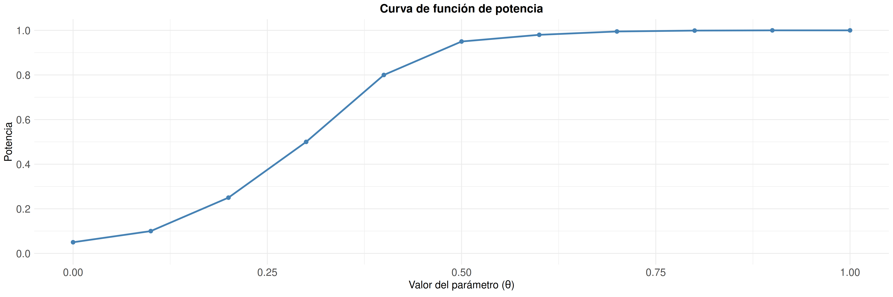

Bioestadística, Agronomía
Departamento de Estadística, Sede Bogotá
Contenido
Parte I: Pruebas de hipótesis para la diferencia de medias.
- Introducción a la comparación de dos poblaciones.
- Tipos de muestras y planteamiento de hipótesis.
- Selección del estadístico de prueba.
- Pruebas para la diferencia de medias.
- Criterios de decisión.
- Ejemplos resueltos.
Parte II: Pruebas de hipótesis para la diferencia de proporciones
- Diferencia de proporciones.
- Hipótesis para diferencia de proporciones
- Estadístico de prueba para diferencia de proporciones.
- Criterios de decisión.
- Ejemplos resueltos.
Parte III: Errores, potencia y razón de varianzas.
- Error tipo I y error tipo II.
- Tabla de decisiones y relación entre \(\small \alpha\) y \(\small \beta\).
- Potencia estadística y función de potencia.
- Efecto del tamaño de muestra sobre la potencia.
- Determinación del tamaño de muestra.
- Prueba de hipótesis para la razón de varianzas (distribución \(\small F\)).
- Ejemplo y solución.
- Taller en clase.
Introducción a las Pruebas de Hipótesis para la diferencia de medias
En numerosas investigaciones no basta con analizar una sola población, sino que es necesario comparar dos grupos para determinar si presentan diferencias significativas.
Resumen clase 14
En la clase anterior se estudiaron las pruebas de hipótesis para un solo parámetro poblacional (\(\mu\), \(p\) y \(\sigma^2\)), junto con sus criterios de decisión.
Clase 14: una población
- Conceptos básicos: \(H_0\), \(H_1\), \(\alpha\), estadístico de prueba.
- Pruebas para la media \(\mu\) y la proporción \(p\).
- Prueba de hipótesis para la varianza \(\sigma^2\).
- Criterios de decisión: región crítica, valor\(-p\) e intervalo de confianza.
Clase 15: dos poblaciones
- Comparación de dos grupos: diferencia de medias y de proporciones.
- Los mismos criterios de decisión, aplicados a la diferencia de parámetros.
- Errores tipo I y II, potencia y razón de varianzas.
La lógica de las pruebas de hipótesis no cambia: lo que cambia es el parámetro de interés, que ahora compara dos poblaciones en lugar de evaluar una sola.
Pruebas de hipótesis para la diferencia de medias
Las pruebas de hipótesis para la diferencia de medias permiten evaluar si las diferencias observadas entre dos muestras reflejan diferencias reales entre las poblaciones o simplemente variaciones debidas al azar.
Parámetro de interés
\[ \mu_1-\mu_2 \]
Diferencia entre las medias de dos poblaciones.
El objetivo es determinar si la diferencia poblacional es igual a cero o si existe evidencia estadística suficiente para afirmar que los promedios de ambas poblaciones son diferentes.
Tipos de Muestras
La selección de la prueba estadística depende de la relación existente entre las muestras que se desean comparar.
Muestras Independientes
Las observaciones de una muestra no tienen relación con las observaciones de la otra.
Ejemplo:
Comparar el rendimiento promedio de dos variedades de maíz sembradas en parcelas diferentes.
Muestras Pareadas
Cada observación de una muestra está asociada con una observación de la otra.
Ejemplo:
Producción de un cultivo antes y después de aplicar un fertilizante.
Identificar correctamente el tipo de muestra es fundamental, ya que determina el estadístico de prueba que debe utilizarse en el análisis.
Hipótesis para la diferencia de medias
El objetivo es determinar si existe evidencia estadística suficiente para afirmar que las medias de dos poblaciones son diferentes. El parámetro de interés es: \(\small \mu_1-\mu_2\)
Dos colas
\[ H_0:\mu_1-\mu_2=0 \]
\[ H_1:\mu_1-\mu_2\neq0 \]
Cola derecha
\[ H_0:\mu_1-\mu_2\leq0 \]
\[ H_1:\mu_1-\mu_2>0 \]
Cola izquierda
\[ H_0:\mu_1-\mu_2\geq0 \]
\[ H_1:\mu_1-\mu_2<0 \]
En la mayoría de aplicaciones, la hipótesis nula plantea que no existe diferencia entre las medias poblacionales, mientras que la hipótesis alternativa evalúa la presencia de diferencias, aumentos o disminuciones en el parámetro de interés.
Estadístico de Prueba
Las pruebas de hipótesis para la diferencia de medias buscan evaluar si la diferencia observada entre dos muestras es suficientemente grande para concluir que existe una diferencia real entre las poblaciones.
Idea General
\[ \text{Estadístico} = \frac{Diferencia\ observada - Diferencia\ bajo\ H_0} {\text{Error estándar}} \]
Diferencia observada
\[ \bar{x}_1-\bar{x}_2 \]
Hipótesis nula
Generalmente se plantea que no existe diferencia entre las medias poblacionales.
\[ H_0:\mu_1-\mu_2=0 \]
Error estándar
Mide la variabilidad de la diferencia entre medias.
Selección del Estadístico de Prueba
La elección del estadístico de prueba depende del tipo de muestra y de la información disponible sobre las poblaciones.
Prueba Z
Se utiliza cuando las desviaciones estándar poblacionales son conocidas.
Prueba t
Se utiliza cuando las desviaciones estándar poblacionales son desconocidas.
t Pareada
Se utiliza cuando las observaciones están relacionadas o emparejadas.
En la práctica, la prueba t de Student es la más utilizada, ya que generalmente las desviaciones estándar poblacionales son desconocidas.
Prueba Z para la Diferencia de Medias
La prueba Z se utiliza para comparar dos medias poblacionales cuando las desviaciones estándar de ambas poblaciones son conocidas.
\[ Z= \frac{(\bar{x}_1-\bar{x}_2)-(\mu_1-\mu_2)} {\sqrt{\frac{\sigma_1^2}{n_1}+\frac{\sigma_2^2}{n_2}}} \]
- \(\bar{x}_1,\bar{x}_2\): medias muestrales.
- \(\sigma_1,\sigma_2\): desviaciones estándar poblacionales.
- \(n_1,n_2\): tamaños muestrales.
- Bajo \(H_0\), generalmente: \(\mu_1-\mu_2=0\)
Pruebas t para la Diferencia de Medias
Cuando las desviaciones estándar poblacionales son desconocidas, la diferencia de medias puede evaluarse mediante una prueba t de Student.
Muestras Independientes
\[ t= \frac{(\bar{x}_1-\bar{x}_2)-(\mu_1-\mu_2)} {\sqrt{\frac{s_1^2}{n_1}+\frac{s_2^2}{n_2}}} \]
- Las muestras provienen de grupos diferentes.
- Se utilizan las desviaciones estándar muestrales: \(\small s_1,\; s_2\)
- Se compara con una distribución t de Student.
Muestras Pareadas
\[ t= \frac{\bar d-\mu_d} {s_d/\sqrt{n}} \]
- Las observaciones están relacionadas.
- El análisis se realiza sobre las diferencias: \(d_i\)
- \(\bar{d}\): promedio de las diferencias.
- \(s_d\): desviación estándar de las diferencias.
- \(n\): número de pares.
- Generalmente se contrasta: \(H_0:\mu_d=0\)
Criterios de Decisión
Una vez calculado el estadístico de prueba, es necesario decidir si existe evidencia suficiente para rechazar la hipótesis nula.
Región crítica
Comparar el estadístico calculado con los valores críticos.
Valor-p
Comparar el valor-p con el nivel de significancia.
Intervalo de confianza
Verificar si el valor hipotético pertenece al intervalo.
Los tres criterios deben conducir a la misma conclusión cuando se aplican correctamente.
Criterio de la Región Crítica
La decisión se toma comparando el estadístico calculado con los valores críticos de la distribución correspondiente.
Dos colas
Rechazar \(H_0\) si:
\[ |Z|>Z_{\alpha/2} \]
o
\[ |t|>t_{\alpha/2} \]
Cola derecha
Rechazar \(H_0\) si:
\[ Z>Z_{\alpha} \]
o
\[ t>t_{\alpha} \]
Cola izquierda
Rechazar \(H_0\) si:
\[ Z<-Z_{\alpha} \]
o
\[ t<-t_{\alpha} \]
Grados de libertad en la distribución t
Cuando se utiliza una prueba t de Student, los valores críticos dependen de los grados de libertad (gl), los cuales determinan la forma de la distribución \(t\).
Muestras Independientes
\[ gl=n_1+n_2-2 \]
Muestras Pareadas
\[ gl=n-1 \]
Los grados de libertad se utilizan para obtener el valor crítico de la distribución t en el criterio de región crítica y para calcular el valor\(-p\).
Criterio del Valor\(-p\)
El valor-p representa la probabilidad de obtener un resultado igual o más extremo que el observado, suponiendo que la hipótesis nula es verdadera.
Regla de decisión
Si: \(p < \alpha\) se rechaza la hipótesis nula. Si: \(p \geq \alpha\) no se rechaza la hipótesis nula.
Mientras más pequeño sea el valor-p, mayor será la evidencia estadística en contra de la hipótesis nula.
Criterio del Intervalo de Confianza
La prueba de hipótesis puede realizarse verificando si el valor propuesto en la hipótesis nula pertenece al intervalo de confianza de la diferencia de medias.
Hipótesis nula
\[ H_0:\mu_1-\mu_2=0 \]
Se evalúa si el valor 0 pertenece al intervalo de confianza.
Regla de decisión
Si \(0\) pertenece al IC: No se rechaza \(H_0\).
Si \(0\) no pertenece al IC: Se rechaza \(H_0\).
Resumen
La selección de la prueba estadística depende del tipo de muestra y de la información disponible sobre las poblaciones.
| Tipo de muestra | Información disponible | Estadístico |
|---|---|---|
| Independientes | σ₁ y σ₂ conocidas | Z |
| Independientes | σ₁ y σ₂ desconocidas | t de Student |
| Pareadas | Diferencias entre pares | t pareada |
Parámetro de interés
\[ \mu_1-\mu_2 \]
Hipótesis más común
\[ H_0:\mu_1-\mu_2=0 \]
Ejemplos de Pruebas de Hipótesis para la Diferencia de Medias
Ejemplo 1
Un investigador desea comparar el rendimiento promedio de dos variedades de arroz. En muestras de \(\small n_1=n_2=50\) parcelas se obtuvo \(\small \bar{x}_1=6.8\) y \(\small \bar{x}_2=6.2\), con \(\small \sigma_1=1.2\) y \(\small \sigma_2=1.1\) conocidas. ¿Existe evidencia estadística para afirmar que los rendimientos promedio de ambas variedades son diferentes? \(\small \alpha=0.05\).
Paso 1. Hipótesis: \[H_0:\mu_1-\mu_2=0 \qquad H_1:\mu_1-\mu_2\neq0\] Prueba de dos colas.
Paso 2. Estadístico: Prueba \(Z\) (\(\sigma\) conocida): \[Z=\frac{6.8-6.2-0}{\sqrt{\frac{1.2^2}{50}+\frac{1.1^2}{50}}}=2.61\]
Paso 3. Criterio de decisión: Para \(\alpha=0.05\) (dos colas), valor crítico \(Z_{crit}=1.96\). \[|Z_{cal}|=2.61 > Z_{crit}=1.96 \;\Rightarrow\; \text{se rechaza } H_0\]
Paso 4. Valor-p: \[p=0.009\] \[p < 0.05 \;\Rightarrow\; \text{se rechaza } H_0\]
Existe evidencia estadística para afirmar que las dos variedades de arroz presentan rendimientos promedio diferentes, con un nivel de significancia del \(5\%\).
Ejemplo 2
Un investigador desea comparar la producción promedio de café (sacos/ha) entre fincas de Caldas y Huila. En Caldas, \(\small n_1=20\) fincas con \(\small \bar{x}_1=34.5\) y \(\small s_1=4.8\); en Huila, \(\small n_2=22\) fincas con \(\small \bar{x}_2=31.2\) y \(\small s_2=5.1\). ¿Existe evidencia suficiente para afirmar que la producción promedio difiere entre ambos departamentos? \(\small \alpha=0.05\).
Paso 1. Hipótesis: \[H_0:\mu_1-\mu_2=0 \qquad H_1:\mu_1-\mu_2\neq0\] Prueba de dos colas.
Paso 2. Estadístico: Prueba \(t\) (\(\sigma\) desconocida), \(\small gl=n_1+n_2-2=40\):
\[t=\frac{(34.5-31.2)-0}{\sqrt{\frac{4.8^2}{20}+\frac{5.1^2}{22}}}=2.16\]
Paso 3. Criterio de decisión: Para \(\alpha=0.05\) y \(gl=40\), valor crítico \(t_{0.025,40}=2.021\). \[t_{cal}=2.16 > t_{crit}=2.021 \;\Rightarrow\; \text{se rechaza } H_0\]
Paso 4. Valor\(-p\):
\[p=0.037 < 0.05 \;\Rightarrow\; \text{se rechaza } H_0\] \[IC_{95\%}=(0.21,\;6.39), \;\; 0\notin IC \;\Rightarrow\; \text{se rechaza } H_0\]
Los tres criterios conducen a la misma decisión: existe evidencia estadística suficiente para afirmar que la producción promedio de café difiere entre las fincas evaluadas de Caldas y Huila, con un nivel de significancia del \(5\%\).
Ejemplo 3
Un investigador evalúa el efecto de un fertilizante biológico sobre el rendimiento de tomate en 15 parcelas de Boyacá. En cada parcela se registró la producción antes y después de aplicar el fertilizante.
| Parcela | Antes | Después | d |
|---|---|---|---|
| 1 | 18 | 20 | 2 |
| 2 | 21 | 24 | 3 |
| 3 | 19 | 20 | 1 |
| 4 | 22 | 24 | 2 |
| … | … | … | … |
| 15 | 20 | 22 | 2 |
Pregunta: ¿Existe evidencia estadística suficiente para afirmar que el fertilizante modifica la producción promedio de tomate? Use \(\small \alpha=0.05\).
Resumen de las diferencias: \[\bar{d}=2.0 \qquad s_d=0.65 \qquad n=15 \qquad \alpha=0.05\]
Paso 1. Hipótesis:
\[H_0:\mu_d=0 \qquad H_1:\mu_d\neq0\]
Prueba de dos colas.
Prueba t para muestras pareadas
Como las observaciones son dependientes (antes y después en las mismas parcelas), se utiliza una prueba t para muestras pareadas.
El estadístico de prueba bajo \(H_0\) es:
\[ t= \frac{\bar d}{s_d/\sqrt{n}} \]
Sustituyendo:
\[ t= \frac{2.0}{0.65/\sqrt{15}} \]
\[ t=11.92 \]
Criterios de decisión
Valor crítico
\[ gl=n-1=14 \]
\[ t_{crit}=t_{0.025,14}=2.145 \]
Como:
\[ |t|=11.92 \]
\[ 11.92>2.145 \]
Se rechaza \(H_0\).
Valor-p
\[ p<0.0001 \]
Como:
\[ p<0.05 \]
Se rechaza \(H_0\).
Intervalo de confianza
\[ IC_{95\%} = (1.64,\;2.36) \]
Como:
\[ 0\notin IC \]
Se rechaza \(H_0\).
Dado que \(|t|>t_{crit}\), el valor-p es menor que \(\alpha\) y el intervalo de confianza no contiene al cero, se rechaza \(H_0\). Por lo tanto, existe evidencia estadística suficiente para concluir que el fertilizante modificó la producción promedio de tomate.
Pruebas de Hipótesis para la diferencia de proporciones
Permiten evaluar si la diferencia observada entre dos porcentajes es estadísticamente significativa o si puede explicarse por la variabilidad del muestreo.
Diferencia de proporciones
Sean \(p_1\) y \(p_2\) las proporciones poblacionales de dos grupos independientes.
El objetivo es determinar si existe evidencia estadística suficiente para afirmar que ambas poblaciones presentan proporciones diferentes respecto a una característica de interés.
Parámetros
\[ p_1 \]
Proporción del grupo 1
\[ p_2 \]
Proporción del grupo 2
Parámetro de interés
\[ p_1-p_2 \]
Diferencia entre las proporciones poblacionales.
Hipótesis para la diferencia de proporciones
Se desea evaluar si dos poblaciones presentan la misma proporción respecto a una característica de interés. El parámetro que se compara es \(\small p_1-p_2\):
Bilateral
\[ H_0:p_1=p_2 \]
\[ H_1:p_1\neq p_2 \]
Cola derecha
\[ H_0:p_1\leq p_2 \]
\[ H_1:p_1>p_2 \]
Cola izquierda
\[ H_0:p_1\geq p_2 \]
\[ H_1:p_1<p_2 \]
La hipótesis alternativa depende de la pregunta de investigación.
Proporciones muestrales
Las proporciones poblacionales se estiman mediante las proporciones muestrales:
Grupo 1
\[ \hat p_1=\frac{x_1}{n_1} \]
\(x_1\): éxitos
\(n_1\): muestra
Grupo 2
\[ \hat p_2=\frac{x_2}{n_2} \]
\(x_2\): éxitos
\(n_2\): muestra
La diferencia observada entre las muestras es:
\[ \hat p_1-\hat p_2 \]
Estadístico de prueba
La diferencia observada entre las proporciones muestrales se compara con la variabilidad esperada bajo la hipótesis nula mediante el siguiente estadístico:
\[ Z= \frac{\hat p_1-\hat p_2} {\sqrt{ \frac{\hat p_1(1-\hat p_1)}{n_1} + \frac{\hat p_2(1-\hat p_2)}{n_2} }} \]
\[ \hat p_1,\hat p_2 \]
Proporciones muestrales observadas.
\[ n_1,n_2 \]
Tamaños de muestra de cada grupo.
Bajo \(H_0\), el estadístico sigue aproximadamente una distribución normal estándar.
Supuestos de la prueba
Antes de aplicar la prueba de hipótesis para la diferencia de proporciones, es necesario verificar que se cumplan ciertas condiciones.
Muestras independientes
Las dos muestras deben seleccionarse de forma independiente.
Tamaño muestral
Cada muestra debe contener suficientes observaciones para garantizar la aproximación normal.
Verificación práctica
Se recomienda comprobar que existan al menos 5 éxitos y 5 fracasos en cada grupo:
\[ n_1\hat p_1 \geq 5 \qquad n_1(1-\hat p_1)\geq 5 \]
\[ n_2\hat p_2 \geq 5 \qquad n_2(1-\hat p_2)\geq 5 \]
Si estas condiciones no se cumplen, la aproximación normal puede no ser adecuada y podrían requerirse pruebas exactas.
Criterios de decisión
Valor crítico
Se compara el estadístico
\[ Z \]
con el valor crítico de la distribución normal estándar.
Se rechaza \(H_0\) cuando \(Z\) pertenece a la región crítica.
Valor-p
Se calcula la probabilidad de obtener un resultado tan extremo como el observado bajo \(H_0\).
Se rechaza \(H_0\) cuando:
\[ \text{Valor-p}<\alpha \]
Intervalo de confianza
Se construye un intervalo para:
\[ p_1-p_2 \]
Se rechaza \(H_0\) si el valor
\[ 0 \]
no pertenece al intervalo.
Los tres criterios conducen a la misma decisión cuando se utiliza el mismo nivel de significancia.
Regiones críticas según la hipótesis alternativa
La región crítica depende de la forma de la hipótesis alternativa y determina cuándo se rechaza la hipótesis nula.
Bilateral
\[ H_1:p_1\neq p_2 \]
Rechazar si:
\[ |Z|>Z_{\alpha/2} \]
Cola derecha
\[ H_1:p_1>p_2 \]
Rechazar si:
\[ Z>Z_{\alpha} \]
Cola izquierda
\[ H_1:p_1<p_2 \]
Rechazar si:
\[ Z<-Z_{\alpha} \]
Ejemplos para la diferencia de proporciones
Ejemplo 1
Un investigador agrícola desea comparar la proporción de germinación de dos variedades de semillas de maíz. Se seleccionan aleatoriamente 200 semillas de cada variedad y se obtienen los siguientes resultados, variedad A: \(x_{1}=170\) y variedad B: \(x_{2}=145\). ¿Existe evidencia estadística suficiente para afirmar que las proporciones de germinación son diferentes?
Paso 1: Hipótesis
\[ H_0:p_1=p_2 \]
\[ H_1:p_1\neq p_2 \]
Paso 2: Estadístico Z
\[ \hat p_1=\frac{170}{200}=0.85 \]
\[ \hat p_2=\frac{145}{200}=0.725 \]
Bajo \(H_0\), el estadístico Z se calcula como:
\[ Z= \frac{(0.85-0.725)-(0)} {\sqrt{\frac{0.85(0.15)}{200} + \frac{0.725(0.275)}{200}}} = 3.10 \]
Criterios de decisión
Valor crítico
\[ \alpha=0.05 \]
\[ \pm1.96 \]
Como:
\[ |3.10|>1.96 \]
Se rechaza \(H_0\).
Valor-p
\[ Valor\text{-}p = 0.002 \]
Como:
\[ 0.002<0.05 \]
Se rechaza \(H_0\).
Intervalo
\[ (0.046,\;0.204) \]
El valor 0 no pertenece al intervalo.
Los tres criterios conducen a la misma decisión.
Conclusión
Existe evidencia estadística suficiente para afirmar que las proporciones de germinación de las dos variedades de maíz son diferentes.
Ejemplo 2
Una empresa agrícola implementa una nueva tecnología de monitoreo y control de humedad en semilleros de tomate.
El objetivo es determinar si esta tecnología aumenta la proporción de semillas que germinan correctamente en comparación con el método tradicional.
| Método | Semillas germinadas | Total evaluadas |
|---|---|---|
| Tradicional | 150 | 180 |
| Nueva tecnología | 205 | 230 |
¿Existe evidencia estadística suficiente para afirmar que la nueva tecnología incrementa la proporción de germinación?
Solución
Hipótesis
\[ \Delta=p_2-p_1 \]
\[ H_0:\Delta\le0 \]
\[ H_1:\Delta>0 \]
Prueba unilateral de cola derecha.
Proporciones muestrales
\[ \hat p_1=\frac{150}{180}=0.833 \]
\[ \hat p_2=\frac{205}{230}=0.891 \]
\[ \hat p_2-\hat p_1=0.058 \]
La diferencia observada es positiva, lo que sugiere que la nueva tecnología presenta una mayor proporción de germinación.
Estadístico de prueba
Fórmula
Bajo \(H_0\) el estadístico Z se calcula como:
\[ Z= \frac{(\hat p_2-\hat p_1)} {\sqrt{ \frac{\hat p_1(1-\hat p_1)}{n_1} + \frac{\hat p_2(1-\hat p_2)}{n_2} }} \]
Sustitución
\[ Z= \frac{(0.891-0.833)} {\sqrt{ \frac{0.891(0.109)}{230} + \frac{0.833(0.167)}{180} }} \] \[=1.68\]
Resultado
\[ Z=1.68 \]
El valor obtenido será utilizado para aplicar los criterios de decisión de la prueba.
Criterios de decisión y conclusión
Valor crítico
\[ \alpha=0.05 \]
\[ Z_{0.05}=1.645 \]
Como: \(1.68>1.645\)
se rechaza \(H_0\)
Valor-p
\[ p=P(Z>1.68) \]
\[ p\approx0.047 \]
Como: \(0.047<0.05\)
se rechaza \(H_0\)
Al nivel de significancia del 5%, existe evidencia estadística suficiente para sugerir que la nueva tecnología incrementa la proporción de germinación de semillas de tomate respecto al método tradicional.
Sin embargo, la evidencia es moderada, ya que el estadístico de prueba se encuentra próximo al valor crítico de decisión.
¿Por qué pueden ocurrir errores?
Como las decisiones se basan en muestras y no en toda la población, siempre existe la posibilidad de tomar una decisión incorrecta.
Errores en las pruebas de hipótesis
Las decisiones en una prueba de hipótesis se basan en información muestral. Por esta razón, siempre existe la posibilidad de tomar una decisión incorrecta respecto a la realidad de la población.
Error Tipo I
\[ \alpha \]
Rechazar una hipótesis nula verdadera.
Error Tipo II
\[ \beta \]
No rechazar una hipótesis nula falsa.
Toda prueba de hipótesis busca controlar la probabilidad de cometer estos errores.
Posibles decisiones en una prueba de hipótesis
La decisión tomada por el investigador puede coincidir o no con la realidad, generando cuatro posibles escenarios.
| \(H_0\) verdadera | \(H_0\) falsa | |
|---|---|---|
| No rechazar \(H_0\) |
✓ Decisión correcta |
Error Tipo II: \((\beta)\) |
| Rechazar \(H_0\) |
Error Tipo I: \((\alpha)\) |
✓ Decisión correcta |
Las probabilidades de cometer estos errores se representan mediante \(\alpha\) y \(\beta\).
Interpretación de \(\alpha\) y \(\beta\)
Las probabilidades asociadas a los errores Tipo I y Tipo II permiten cuantificar el riesgo de tomar una decisión incorrecta en una prueba de hipótesis.
\[ \alpha \]
Representa el riesgo de rechazar una hipótesis nula que en realidad es verdadera.
\[ \beta \]
Representa el riesgo de no detectar un efecto o diferencia que realmente existe.
Por convención, suele utilizarse
\[ \alpha = 0.05 \]
lo que implica aceptar un riesgo del 5% de cometer un Error Tipo I.
Ejemplo: Errores en una prueba de hipótesis
Un investigador desea evaluar si un nuevo fertilizante aumenta el rendimiento promedio de un cultivo de fresa.
- \(H_0\): El fertilizante no aumenta el rendimiento.
- \(H_1\): El fertilizante aumenta el rendimiento.
Error Tipo I (\(\alpha\))
Se concluye que el fertilizante mejora el rendimiento y se rechaza \(H_0\), cuando en realidad no produce ningún efecto.
Interpretación: Se recomienda un fertilizante que realmente no funciona.
Consecuencia: pérdidas económicas para los productores.
Error Tipo II (\(\beta\))
Se concluye que el fertilizante no mejora el rendimiento y no se rechaza \(H_0\), cuando en realidad sí produce una mejora.
Interpretación: Se descarta un fertilizante que realmente sí funciona.
Consecuencia: se pierde una oportunidad de aumentar la producción.
Potencia estadística
Además de controlar el riesgo de cometer errores, es importante que una prueba tenga capacidad para detectar diferencias o efectos reales cuando estos existen.
Definición
La potencia es la probabilidad de rechazar correctamente \(H_0\) cuando realmente es falsa.
Relación con el Error Tipo II
\[ \text{Potencia}=1-\beta \]
Como \(\beta\) representa la probabilidad de cometer un Error Tipo II, la potencia corresponde a la probabilidad de detectar correctamente un efecto o diferencia real.
Por ejemplo: si \(\beta=0.20\), entonces la potencia es \(0.80\), lo que significa que existe un 80% de probabilidad de detectar un efecto real.
A menor probabilidad de cometer un Error Tipo II, mayor será la potencia de la prueba.
Factores que afectan la potencia
La potencia de una prueba no es fija. Su valor depende de varios factores relacionados con el diseño del estudio y las características de la población.
| Factor | Efecto sobre la potencia |
|---|---|
| Tamaño de muestra | \(n \uparrow \Rightarrow\) Potencia \(\uparrow\) |
| Nivel de significancia | \(\alpha \uparrow \Rightarrow\) Potencia \(\uparrow\) |
| Variabilidad | \(\sigma \downarrow \Rightarrow\) Potencia \(\uparrow\) |
| Tamaño del efecto | Efecto \(\uparrow \Rightarrow\) Potencia \(\uparrow\) |
En general, una prueba tendrá mayor capacidad para detectar efectos reales cuando la información disponible sea más precisa y abundante.
Función de potencia
La potencia de una prueba no suele ser un valor fijo. Su magnitud depende del valor real del parámetro poblacional.
La función de potencia describe la probabilidad de rechazar la hipótesis nula para cada posible valor del parámetro de interés.
Cuando el parámetro real es muy cercano al valor planteado en \(H_0\), resulta más difícil detectar diferencias y la potencia suele ser menor.
A medida que el parámetro se aleja del valor establecido en \(H_0\), la evidencia en contra de la hipótesis nula aumenta y la potencia tiende a incrementarse.
La función de potencia permite evaluar la capacidad de una prueba para detectar distintos tamaños de efecto y comparar diferentes diseños de estudio.
Definición de la función de potencia
La función de potencia de una prueba estadística se define como:
\[ \pi(\theta) = P(\text{rechazar } H_0 \mid \theta) \]
donde \((\theta)\) representa el valor real del parámetro poblacional.
Esta función mide la probabilidad de detectar un efecto cuando este realmente existe.
La potencia está relacionada con el error tipo II \((\beta)\) a través de la siguiente relación:
\[ \text{Potencia} = 1 - \beta \]
Un aumento en la potencia implica una menor probabilidad de no detectar un efecto real.
Representación gráfica de la función de potencia
La función de potencia se representa como una curva creciente.
A medida que el valor del parámetro se aleja de \((H_0)\), aumenta la probabilidad de rechazarla.

Efecto del tamaño de muestra sobre la potencia
El tamaño de muestra es uno de los factores que más influye en la potencia de una prueba estadística.
Al aumentar el tamaño de muestra, disminuye la variabilidad de los estimadores y resulta más fácil detectar diferencias reales.
Por esta razón, pruebas realizadas con muestras más grandes suelen presentar una mayor potencia.
En general:
\(n \uparrow \quad \Longrightarrow \quad \beta \downarrow \quad \Longrightarrow \quad \text{Potencia} \uparrow\)
Gráfico del efecto del tamaño de muestra sobre la potencia

A medida que aumenta el tamaño de muestra, la potencia crece más rápidamente y la prueba tiene mayor capacidad para detectar diferencias reales.
Ejemplo: Determinación del tamaño de muestra
Problema
Un investigador desea evaluar un nuevo fertilizante en cultivos de fresa. Se considera importante detectar una diferencia mínima de:
\[ d=4 \text{ toneladas/ha} \]
\[ \sigma=8 \]
\[ \alpha=0.05 \qquad \text{Potencia}=0.80 \]
\[\beta=0.20\]
\[ Z_{\alpha/2}=1.96 \qquad Z_{\beta}=0.84 \]
Cálculo
\[ n= \left( \frac{(Z_{\alpha/2}+Z_{\beta})\sigma} {d} \right)^2 \]
\[ n= \left( \frac{(1.96+0.84)(8)} {4} \right)^2 \]
\[ n=31.36 \approx 32 \]
Se requieren al menos \(n=32\) unidades experimentales para detectar una diferencia de \(4\) toneladas/ha con un nivel de significancia del \(5\%\) y una potencia del \(80\%\).
Resumen: Errores, potencia y tamaño de muestra
Error Tipo I
Rechazar \(H_0\)
cuando es verdadera.
Controlado por:
\[ \alpha \]
Error Tipo II
No rechazar \(H_0\)
cuando es falsa.
Representado por:
\[ \beta \]
Potencia
Probabilidad de detectar una diferencia real.
\[ 1-\beta \]
Tamaño de muestra
Principal herramienta para aumentar la potencia.
\[ n\uparrow \Rightarrow \beta\downarrow \Rightarrow \text{Potencia}\uparrow \]
Una prueba estadística confiable busca controlar el Error Tipo I y minimizar el Error Tipo II mediante un tamaño de muestra adecuado y una potencia suficiente.
Pruebas de Hipótesis para la Razón de Varianzas
Las pruebas para la razón de varianzas permiten determinar si una población es más dispersa que otra y son útiles en el análisis estadístico y el diseño de experimentos.
¿Para qué sirve la prueba de razón de varianzas?
En muchos estudios no solo interesa comparar promedios, sino también analizar la variabilidad de los datos. La prueba para la razón de varianzas permite determinar si dos poblaciones presentan niveles de dispersión similares o si una de ellas es significativamente más variable que la otra.
¿Qué compara?
La variabilidad de dos poblaciones independientes.
¿Por qué es importante?
Permite verificar si ambas poblaciones presentan una dispersión similar.
Esta prueba constituye una herramienta fundamental en ANOVA y Diseño de Experimentos.
¿Cuándo se utiliza?
La prueba de razón de varianzas se utiliza cuando se desea comparar la dispersión de dos poblaciones y verificar si presentan niveles de variabilidad estadísticamente similares.
✓ Dos muestras independientes
✓ Datos cuantitativos
✓ Comparación de varianzas
✓ Poblaciones aproximadamente normales
La normalidad es un supuesto importante para que la distribución F sea válida.
Parámetros de interés
El objetivo de esta prueba consiste en comparar la variabilidad de dos poblaciones mediante sus varianzas poblacionales.
Población 1
\[ \sigma_1^2 \]
Varianza poblacional del primer grupo.
Población 2
\[ \sigma_2^2 \]
Varianza poblacional del segundo grupo.
Como las varianzas poblacionales son desconocidas, la inferencia se realiza utilizando las varianzas muestrales
\[ s_1^2 \qquad \text{y} \qquad s_2^2 \]
obtenidas a partir de muestras independientes.
Hipótesis de investigación
La formulación de las hipótesis depende de la pregunta de investigación planteada. En la comparación de varianzas pueden realizarse pruebas bilaterales o unilaterales.
Bilateral
\[ H_0:\sigma_1^2=\sigma_2^2 \]
\[ H_1:\sigma_1^2\neq\sigma_2^2 \]
Cola derecha
\[ H_0:\sigma_1^2\leq\sigma_2^2 \]
\[ H_1:\sigma_1^2>\sigma_2^2 \]
Cola izquierda
\[ H_0:\sigma_1^2\geq\sigma_2^2 \]
\[ H_1:\sigma_1^2<\sigma_2^2 \]
En la práctica, la prueba bilateral es la más utilizada para evaluar la homogeneidad de varianzas.
Distribución F y estadístico de prueba
La prueba para la razón de varianzas utiliza la distribución F de Fisher-Snedecor, la cual se obtiene a partir de la razón entre dos varianzas muestrales provenientes de poblaciones normales e independientes.
\[ F=\frac{s_1^2}{s_2^2} \]
Por convención, suele colocarse la mayor varianza en el numerador para obtener valores de: \(\small F \geq 1\).
Numerador
\[ gl_1=n_1-1 \]
Denominador
\[ gl_2=n_2-1 \]
Si las varianzas poblacionales son iguales, se espera que el estadístico F tome valores cercanos a 1. Valores muy alejados de 1 constituyen evidencia en contra de la hipótesis nula.
Hipótesis y criterio de decisión
Una vez calculado el estadístico de prueba, la decisión se toma comparando el valor observado con un valor crítico obtenido de la distribución F de Fisher-Snedecor.
Hipótesis nula
\[ H_0:\sigma_1^2=\sigma_2^2 \]
Igual variabilidad.
Hipótesis alterna
\[ H_1:\sigma_1^2\neq\sigma_2^2 \]
Diferente variabilidad.
Regla de decisión
Si
\[ F_{calc}>F_{\alpha/2,gl_1,gl_2} \]
Se rechaza \(H_0\).
Valores grandes de \(F\) indican que las diferencias observadas entre las varianzas son demasiado importantes para atribuirse únicamente al azar.
Ejemplo
Un investigador agrícola desea comparar la variabilidad del rendimiento de fresa obtenida bajo dos sistemas de riego. Para ello selecciona dos muestras independientes, usa un nivel de significancia de \(\small \alpha=0.05\) y obtiene la siguiente información:
Sistema A
\[ s_A^2=18.5 \]
\[ n_A=15 \]
Sistema B
\[ s_B^2=8.2 \]
\[ n_B=12 \]
Contrastar:
\[ H_0:\sigma_A^2=\sigma_B^2 \]
\[ H_1:\sigma_A^2\neq\sigma_B^2 \]
Solución
Estadístico de prueba
\[ F=\frac{s_A^2}{s_B^2} \] \[ F=\frac{18.5}{8.2} \]
\[ F=2.26 \]
Valor crítico
\[ gl_1=14 \]
\[ gl_2=11 \]
\[ F_{crit}=F_{0.025,14,11}=3.29 \]
Como \(2.26 < 3.29\), no se rechaza \(H_0\).
Con un nivel de significancia del \(5\%\), no existe evidencia estadística suficiente para afirmar que los sistemas de riego presentan variabilidades diferentes en el rendimiento de fresa.
Taller en Clase
Instrucciones
Para cada ejercicio:
- Plantee las hipótesis nula y alternativa.
- Identifique el tipo de prueba de hipótesis.
- Aplique el criterio de decisión utilizando los estadísticos suministrados.
- Indique si se rechaza o no la hipótesis nula.
- Redacte una conclusión en el contexto del problema.
Ejercicio 1
Problema
Un investigador agrícola desea determinar si dos variedades de aguacate Hass presentan diferencias en su rendimiento promedio por hectárea. Se seleccionan dos muestras independientes y se obtienen:
| Variedad | Media (t/ha) | Desv. Est. | Muestra |
|---|---|---|---|
| A | 3.8 | 0.50 | 25 |
| B | 4.1 | 0.60 | 30 |
Utilice: \(t_{0.025,53}=2.01\) y \(\alpha=0.05\)
Ejercicio 2
Problema
Una empresa agrícola afirma que un nuevo biofertilizante aumenta el rendimiento promedio de mora de Castilla respecto al manejo convencional. Los resultados obtenidos fueron:
| Tratamiento | Media (kg/parcela) | Desv. Est. | Muestra |
|---|---|---|---|
| Convencional | 42 | 5.2 | 20 |
| Biofertilizante | 46 | 6.1 | 22 |
Utilice: \(t_{0.05,40}=1.68\) y \(\alpha=0.05\)
Ejercicio 3
Problema
En un cultivo de caña panelera se desea verificar si un sistema de riego inteligente reduce el consumo promedio de agua. Se registró el consumo semanal de agua (m³) en las mismas parcelas antes y después de implementar el sistema.
| Parcela | Antes | Después | d = Después − Antes |
|---|---|---|---|
| 1 | 120 | 104 | |
| 2 | 135 | 119 | |
| 3 | 128 | 110 | |
| 4 | 142 | 121 | |
| 5 | 130 | 113 | |
| 6 | 125 | 107 | |
| 7 | 138 | 118 | |
| 8 | 132 | 116 | |
| 9 | 127 | 111 | |
| 10 | 140 | 121 |
Utilice: \(t_{0.05,9}=-1.833\) y \(\alpha=0.05\)
Ejercicio 4
Problema
Dos tratamientos de pregerminación se aplican a semillas de maracuyá para evaluar cuál presenta una mayor proporción de germinación.
| Tratamiento | Germinadas | Total |
|---|---|---|
| A | 168 | 200 |
| B | 186 | 210 |
Utilice: \(Z_{0.05}=1.645\) y \(\alpha=0.05\)